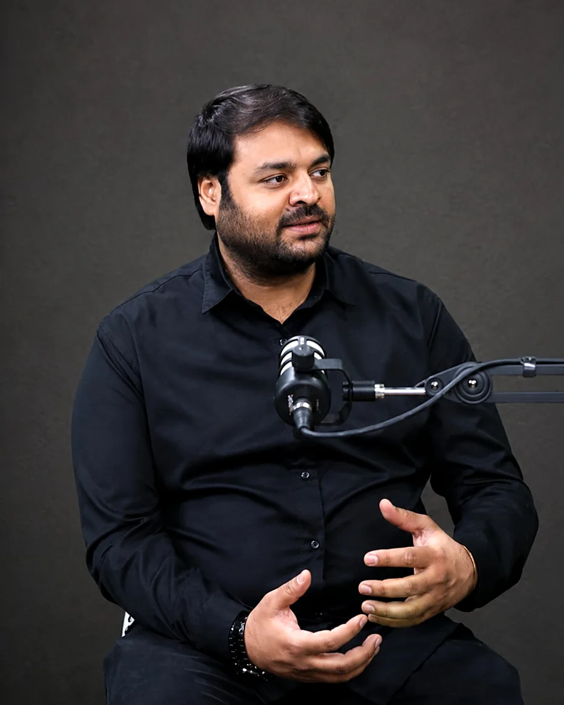

From the founder
A message from Sir Waqas Khan
“SWK has always been about one thing — bringing students together with teachers who know how to bring out their best. Cambridge Online is our next step: the same teaching, the same standards and the same commitment, now accessible to students wherever they are.”
For years, students have come to SWK to learn from the teachers they trust. Cambridge Online brings that same experience to students everywhere.